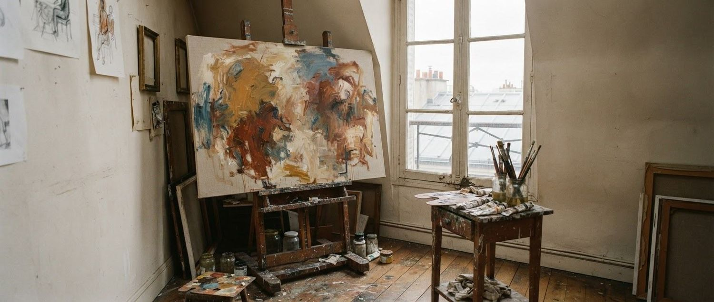
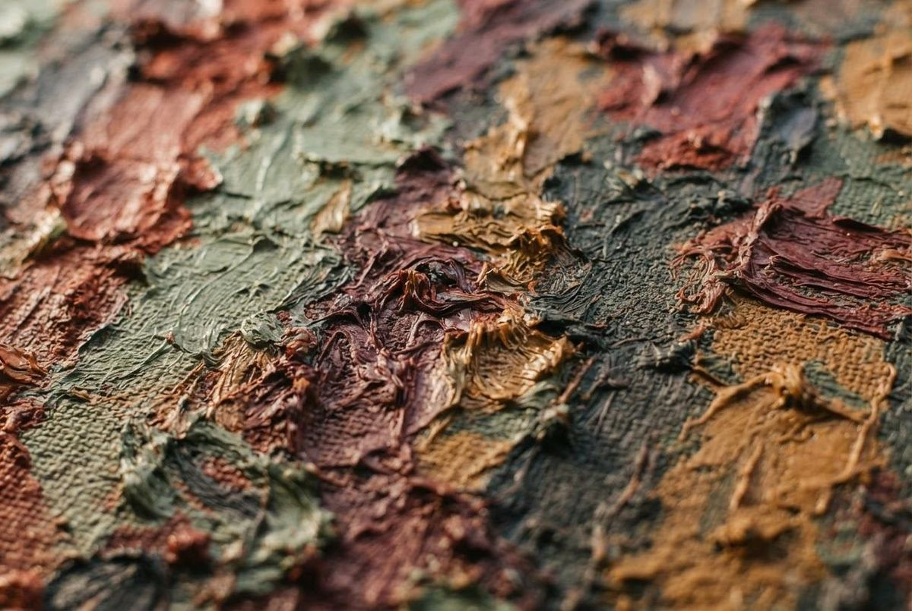
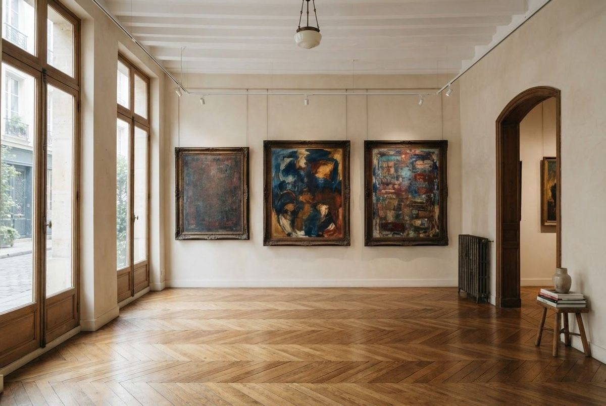

La galerie · Une histoire de regard
Le regard d’un peintre.
L’âme d’une galerie.
Paul DECHEWSKY
Propriétaire, peintre et passionné de peinture.
Une même curiosité nourrit son travail d’artiste et son regard de galeriste.

30+années dans
le milieu artistique.
Une passion devenue un lieu
DEDAL DES COULEURS est le prolongement d’une vie consacrée à la peinture. Depuis plus de 30 ans, Paul DECHEWSKY travaille dans le milieu artistique et cultive le plaisir de regarder, de créer et de transmettre.
À Paris, il expose et vend ses propres œuvres ainsi que celles de la mouvance expressionniste. Son expérience de peintre donne une place particulière à la matière, à la couleur et à l’émotion dans la rencontre avec chaque œuvre.
La galerie s’adresse aux collectionneurs, aux artistes et aux professionnels. Le point de départ reste toujours le même : un échange, un regard, une sensibilité.
Le mouvement expressionniste
Peindre ce que
l’on ressent.
Plus qu’une ressemblance, une intensité. La peinture expressionniste déplace les lignes, libère les couleurs et laisse l’émotion guider le regard.
Soutine, Modigliani, Kikoine,
Pascin, Chagall, Picasso.
Artistes cités dans l’univers de la galerie, sans attribution des visuels de cette maquette.

Pousser la porte
La rencontre
commence à Paris.
10 rue de la République75000 Paris
Pour préparer une visite ou parler d’un projet, contactez directement Paul DECHEWSKY.
